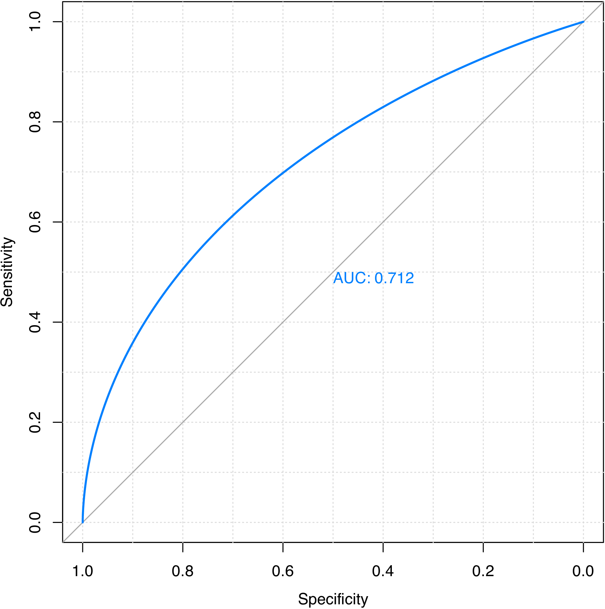

Rcpi: R/Bioconductor Package as an Integrated Informatics Platform for Drug Discovery
Nan Xiao <https://nanx.me>
2018-06-26
Source:vignettes/Rcpi.Rmd
Rcpi.RmdIntroduction
The Rcpi package Cao et al. (2015) offers an R/Bioconductor package emphasizing the comprehensive integration of bioinformatics and chemoinformatics into a molecular informatics platform for drug discovery.
Rcpi implemented and integrated the state-of-the-art protein sequence descriptors and molecular descriptors/fingerprints with R. For protein sequences, the Rcpi package can
- Calculate six protein descriptor groups composed of fourteen types of commonly used structural and physicochemical descriptors that include 9,920 descriptors.
- Calculate profile-based protein representation derived by PSSM (Position-Specific Scoring Matrix).
- Calculate six types of generalized scales-based descriptors derived by various dimensionality reduction methods for proteochemometric (PCM) modeling.
- Parallellized pairwise similarity computation derived by protein sequence alignment and Gene Ontology (GO) semantic similarity measures within a list of proteins.
For small molecules, the Rcpi package can
- Calculate 307 molecular descriptors (2D/3D), including constitutional, topological, geometrical, and electronic descriptors, etc.
- Calculate more than ten types of molecular fingerprints, including FP4 keys, E-state fingerprints, MACCS keys, etc., and parallelized chemical similarity search.
- Parallelized pairwise similarity computation derived by fingerprints and maximum common substructure search within a list of small molecules.
By combining various types of descriptors for drugs and proteins in different methods, interaction descriptors representing protein-protein or compound-protein interactions can be conveniently generated with Rcpi, including:
- Two types of compound-protein interaction (CPI) descriptors
- Three types of protein-protein interaction (PPI) descriptors
Several useful auxiliary utilities are also shipped with Rcpi:
- Parallelized molecule and protein sequence retrieval from several online databases, like PubChem, ChEMBL, KEGG, DrugBank, UniProt, RCSB PDB, etc.
- Loading molecules stored in SMILES/SDF files and loading protein sequences from FASTA/PDB files
- Molecular file format conversion
The computed protein sequence descriptors, molecular descriptors/fingerprints, interaction descriptors and pairwise similarities are widely used in various research fields relevant to drug disvery, such as, bioinformatics, chemoinformatics, proteochemometrics and chemogenomics.
Installation
To install the Rcpi package, use:
To make the Rcpi package fully functional (especially the Open Babel related functionalities), we recommend the users also install the Enhances packages by:
source("https://bioconductor.org/biocLite.R")
biocLite("Rcpi", dependencies = c("Imports", "Enhances"))Several dependencies of the Rcpi package may require some system-level libraries, check the corresponding manuals of these packages for detailed installation guides.
How to Cite Rcpi
If you feel Rcpi is useful in your research, please cite our paper:
Dong-Sheng Cao, Nan Xiao, Qing-Song Xu, and Alex F. Chen. (2015). Rcpi: R/Bioconductor package to generate various descriptors of proteins, compounds and their interactions. Bioinformatics 31 (2), 279-281.
BibTeX entry:
@article{Rcpi2015,
author = {Cao, Dong-Sheng and Xiao, Nan and Xu, Qing-Song and Alex F. Chen.},
title = {{Rcpi: R/Bioconductor package to generate various descriptors
of proteins, compounds and their interactions}},
journal = {Bioinformatics},
year = {2015},
volume = {31},
number = {2},
pages = {279--281},
doi = {10.1093/bioinformatics/btu624},
issn = {1367-4803},
url = {http://bioinformatics.oxfordjournals.org/content/31/2/279}
}Applications in Bioinformatics
For bioinformatics research, Rcpi calculates commonly used descriptors and proteochemometric (PCM) modeling descriptors for protein sequences. Rcpi also computes pairwise similarities derived by GO semantic similarity and sequence alignment.
Predicting Protein Subcellular Localization
Protein subcellular localization prediction involves the computational prediction of where a protein resides in a cell. It is an important component of bioinformatics-based prediction of protein function and genome annotation, and can also aid us to identify novel drug targets.
Here we use the subcellular localization dataset of human proteins presented in the study of Chou and Shen (2008) for a demonstration. The complete dataset includes 3,134 protein sequences (2,750 different proteins), classified into 14 human subcellular locations. We selected two classes of proteins as our benchmark dataset. Class 1 contains 325 extracell proteins, and class 2 includes 307 mitochondrion proteins.
First, we load the Rcpi package, then read the protein sequences stored in two separated FASTA files with readFASTA():
library("Rcpi")
# load FASTA files
extracell = readFASTA(system.file(
"vignettedata/extracell.fasta", package = "Rcpi"))
mitonchon = readFASTA(system.file(
"vignettedata/mitochondrion.fasta", package = "Rcpi"))The loaded sequences are stored as two lists in R, and each component in the list is a character string representing one protein sequence. In this case, there are 325 extracell protein sequences and 306 mitonchon protein sequences:
To assure that the protein sequences only have the twenty standard amino acid types which is required for the descriptor computation, we use the checkProt() function to do the amino acid type sanity checking and remove the non-standard protein sequences:
extracell = extracell[(sapply(extracell, checkProt))]
mitonchon = mitonchon[(sapply(mitonchon, checkProt))]Two protein sequences were removed from each class. For the remaining sequences, we calculate the amphiphilic pseudo amino acid composition (APAAC) descriptor Chou (2005) and create class labels for the random forest classification modeling.
# calculate APAAC descriptors
x1 = t(sapply(extracell, extractProtAPAAC))
x2 = t(sapply(mitonchon, extractProtAPAAC))
x = rbind(x1, x2)
# make class labels
labels = as.factor(c(rep(0, length(extracell)), rep(1, length(mitonchon))))In Rcpi, the functions of commonly used descriptors for protein sequences and proteochemometric (PCM) modeling descriptors are named after extractProt...() and extractPCM...().
Next, we will split the data into a 75% training set and a 25% test set.
set.seed(1001)
# split training and test set
tr.idx = c(
sample(1:nrow(x1), round(nrow(x1) * 0.75)),
sample(nrow(x1) + 1:nrow(x2), round(nrow(x2) * 0.75)))
te.idx = setdiff(1:nrow(x), tr.idx)
x.tr = x[tr.idx, ]
x.te = x[te.idx, ]
y.tr = labels[tr.idx]
y.te = labels[te.idx]We will train a random forest classification model on the training set with 5-fold cross-validation, using the package.
The training result is:
## Call:
## randomForest(x = x.tr, y = y.tr, cv.fold = 5)
## Type of random forest: classification
## Number of trees: 500
## No. of variables tried at each split: 8
##
## OOB estimate of error rate: 25.11%
## Confusion matrix:
## 0 1 class.error
## 0 196 46 0.1900826
## 1 72 156 0.3157895With the model trained on the training set, we predict on the test set and plot the ROC curve with the package, as is shown in Figure 1.
# predict on test set
rf.pred = predict(rf.fit, newdata = x.te, type = "prob")[, 1]
# plot ROC curve
library("pROC")
plot.roc(y.te, rf.pred, grid = TRUE, print.auc = TRUE)
Figure 1: ROC curve for the test set of protein subcellular localization data
The area under the ROC curve (AUC) is:
Applications in Chemoinformatics
For chemoinformatics research, Rcpi calculates various types of molecular descriptors/fingerprints, and computes pairwise similarities derived by fingerprints and maximum common substructure search. Rcpi also provides the searchDrug() function for parallelized molecular similarity search based on these similarity types.
Regression Modeling in QSRR Study of Retention Indices
In Yan et al. (2012), a quantitative structure-retention relationship study was performed for 656 flavor compounds on four stationary phases of different polarities, using constitutional, topological and geometrical molecular descriptors. The gas chromatographic retention indices (RIs) of these compounds were accurately predicted using linear models. Here we choose the molecules and their RIs of one stationary phase (OV101) as our benchmark dataset.
Since it would be rather tedious to implement the complete cross-validation procedures, the R package caret is used here. To run the R code below, users need to install the package and the required predictive modeling packages first. The package provides a unified interface for the modeling tuning task across different statistical machine learning packages. It is particularly helpful in QSAR modeling, for it contains tools for data splitting, pre-processing, feature selection, model tuning and other functionalities.
Just like the last section, we load the Rcpi package, and read the molecules stored in a SMILES file:
library("Rcpi")
RI.smi = system.file(
"vignettedata/FDAMDD.smi", package = "Rcpi")
RI.csv = system.file(
"vignettedata/RI.csv", package = "Rcpi")
x.mol = readMolFromSmi(RI.smi, type = "mol")
x.tab = read.table(RI.csv, sep = "\t", header = TRUE)
y = x.tab$RIThe readMolFromSmi() function is used for reading molecules from SMILES files, for molecules stored in SDF files, use readMolFromSDF() instead.
The CSV file RI.csv contains tabular data for the retention indices, compound name, and odor information of the compounds. Here we only extracted the RI values by calling x.tab$RI.
After the molecules were properly loaded, we calculate several selected molecular descriptors. The corresponding functions for molecular descriptor calculation are all named after extractDrug...() in Rcpi:
# calculate selected molecular descriptors
x = suppressWarnings(cbind(
extractDrugALOGP(x.mol),
extractDrugApol(x.mol),
extractDrugECI(x.mol),
extractDrugTPSA(x.mol),
extractDrugWeight(x.mol),
extractDrugWienerNumbers(x.mol),
extractDrugZagrebIndex(x.mol)))After the descriptors were calculated, the result x will be a data frame, each row represents one molecule, and each column is one descriptor (predictor). The Rcpi package integrated the molecular descriptors and chemical fingerprints calculated by the rcdk package Steinbeck et al. (2003) and the ChemmineOB package Horan and Girke (2013).
Next, a partial least squares model will be fitted with the pls and the caret package. The cross-validation setting is 5-fold repeated cross-validation (repeat for 10 times).
# regression on training set
library("caret")
library("pls")
# cross-validation settings
ctrl = trainControl(
method = "repeatedcv", number = 5, repeats = 10,
summaryFunction = defaultSummary)
# train a pls model
set.seed(1002)
pls.fit = train(
x, y, method = "pls", tuneLength = 10, trControl = ctrl,
metric = "RMSE", preProc = c("center", "scale"))
# print cross-validation result
print(pls.fit)The cross-validation result is:
## Partial Least Squares
##
## 297 samples
## 10 predictors
##
## Pre-processing: centered, scaled
## Resampling: Cross-Validated (5 fold, repeated 10 times)
##
## Summary of sample sizes: 237, 237, 237, 238, 239, 238, ...
##
## Resampling results across tuning parameters:
##
## ncomp RMSE Rsquared RMSE SD Rsquared SD
## 1 104 0.884 9.44 0.0285
## 2 86.4 0.92 6.99 0.0194
## 3 83.8 0.924 6.56 0.0185
## 4 79.6 0.931 6.98 0.0194
## 5 76.3 0.937 7.45 0.0187
## 6 74.7 0.94 6.85 0.0162
## 7 73.7 0.941 6.75 0.0159
## 8 73.5 0.942 6.5 0.0142
## 9 72.5 0.944 6.18 0.0137
##
## RMSE was used to select the optimal model using the smallest value.
## The final value used for the model was ncomp = 9.We see that the RMSE of the PLS regression model was decreasing when the number of principal components (ncomp) was increasing. We can plot the components and RMSE to helps us select the desired number of principal components used in the model.

Figure 2: Number of principal components vs. RMSE for the PLS regression model
From Figure 2, we consider that selecting six or seven components is acceptable. At last, we plot the experimental RIs and the predicted RIs to see if the model fits well on the training set (Figure 3):
# plot experimental RIs vs predicted RIs
plot(y, predict(pls.fit, x), xlim = range(y), ylim = range(y),
xlab = "Experimental RIs", ylab = "Predicted RIs")
abline(a = 0, b = 1)Figure 3: Experimental RIs vs. Predicted RIs
In Silico Toxicity Classification for Drug Discovery
In the perspective of quantitative pharmacology, the successful discovery of novel drugs depends on the pharmacokinetics properties, like absorption, distribution, metabolism, and excretion. In addition, the potential toxicity of chemical compounds is taken into account. QSAR or QSPR methods are usually employed to predict the ADME/T qualities of potential drug candidates.
In D-S Cao et al. (2012), quantitative structure-toxicity relationship (QSTR) models were established for classifying five toxicity datasets. Here we use the maximum recommended daily dose dataset (FDAMDD) from FDA Center for Drug Evaluation and Research as the benchmark dataset.
First, load the drug molecules stored in a SMILES file into R:
library("Rcpi")
fdamdd.smi = system.file("vignettedata/FDAMDD.smi", package = "Rcpi")
fdamdd.csv = system.file("vignettedata/FDAMDD.csv", package = "Rcpi")
x.mol = readMolFromSmi(fdamdd.smi, type = "mol")
x.smi = readMolFromSmi(fdamdd.smi, type = "text")
y = as.factor(paste0("class", scan(fdamdd.csv)))The object x.mol is used for computing the MACCS and E-state fingerprints; the object x.smi is used for computing the FP4 fingerprints. The 0-1 class labels stored in file FDAMDD.csv indicates whether the drug molecule has high toxicity or not.
Then we calculate three different types of molecular fingerprints (E-state, MACCS, and FP4) for the drug molecules:
# calculate molecular fingerprints
x1 = extractDrugEstateComplete(x.mol)
x2 = extractDrugMACCSComplete(x.mol)
x3 = extractDrugOBFP4(x.smi, type = "smile")As the nature of fingerprint-based structure representation, the calculated 0-1 matrix x1, x2, and x3 will be very sparse. Since there are several columns have nearly exactly the same value for all the molecules, we should remove them with nearZeroVar() in caret before modeling, and split our training set and test set:
library("caret")
# remove near-zero variance variables
x1 = x1[, -nearZeroVar(x1)]
x2 = x2[, -nearZeroVar(x2)]
x3 = x3[, -nearZeroVar(x3)]
# split training and test set
set.seed(1003)
tr.idx = sample(1:nrow(x1), round(nrow(x1) * 0.75))
te.idx = setdiff(1:nrow(x1), tr.idx)
x1.tr = x1[tr.idx, ]
x1.te = x1[te.idx, ]
x2.tr = x2[tr.idx, ]
x2.te = x2[te.idx, ]
x3.tr = x3[tr.idx, ]
x3.te = x3[te.idx, ]
y.tr = y[tr.idx]
y.te = y[te.idx]On the training sets, we will train three classification models separately using SVM (RBF kernel), using the kernlab package and the caret package. The cross-validation setting is 5-fold repeated CV (repeat for 10 times).
# svm classification on training sets
library("kernlab")
# cross-validation settings
ctrl = trainControl(method = "cv", number = 5, repeats = 10,
classProbs = TRUE,
summaryFunction = twoClassSummary)
# SVM with RBF kernel
svm.fit1 = train(
x1.tr, y.tr, method = "svmRadial", trControl = ctrl,
metric = "ROC", preProc = c("center", "scale"))
svm.fit2 = train(
x2.tr, y.tr, method = "svmRadial", trControl = ctrl,
metric = "ROC", preProc = c("center", "scale"))
svm.fit3 = train(
x3.tr, y.tr, method = "svmRadial", trControl = ctrl,
metric = "ROC", preProc = c("center", "scale"))
# print cross-validation result
print(svm.fit1)
print(svm.fit2)
print(svm.fit3)The training result when using E-state fingerprints:
## Support Vector Machines with Radial Basis Function Kernel
##
## 597 samples
## 23 predictors
## 2 classes: "class0", "class1"
##
## Pre-processing: centered, scaled
## Resampling: Cross-Validated (5 fold)
##
## Summary of sample sizes: 478, 479, 477, 477, 477
##
## Resampling results across tuning parameters:
##
## C ROC Sens Spec ROC SD Sens SD Spec SD
## 0.25 0.797 0.7 0.765 0.0211 0.0442 0.00666
## 0.5 0.808 0.696 0.79 0.0173 0.059 0.0236
## 1 0.812 0.703 0.781 0.0191 0.0664 0.0228
##
## Tuning parameter "sigma" was held constant at a value of 0.02921559
## ROC was used to select the optimal model using the largest value.
## The final values used for the model were sigma = 0.0292 and C = 1.We can see that, after removing the near zero variance predictors, there were only 23 predictors left for the original 79 E-state fingerprints.
The training result when using MACCS keys:
## Support Vector Machines with Radial Basis Function Kernel
##
## 597 samples
## 126 predictors
## 2 classes: "class0", "class1"
##
## Pre-processing: centered, scaled
## Resampling: Cross-Validated (5 fold)
##
## Summary of sample sizes: 477, 477, 477, 478, 479
##
## Resampling results across tuning parameters:
##
## C ROC Sens Spec ROC SD Sens SD Spec SD
## 0.25 0.834 0.715 0.775 0.0284 0.0994 0.0589
## 0.5 0.848 0.726 0.79 0.0299 0.065 0.0493
## 1 0.863 0.769 0.793 0.0307 0.0229 0.0561
##
## Tuning parameter "sigma" was held constant at a value of 0.004404305
## ROC was used to select the optimal model using the largest value.
## The final values used for the model were sigma = 0.0044 and C = 1.There are 126 predictors left for the original 166 MACCS keys after removing the near-zero variance predictors. The model performance by AUC values is slightly better than using the E-state fingerprints.
The training result when using FP4 fingerprints:
## Support Vector Machines with Radial Basis Function Kernel
##
## 597 samples
## 58 predictors
## 2 classes: "class0", "class1"
##
## Pre-processing: centered, scaled
## Resampling: Cross-Validated (5 fold)
##
## Summary of sample sizes: 478, 478, 477, 478, 477
##
## Resampling results across tuning parameters:
##
## C ROC Sens Spec ROC SD Sens SD Spec SD
## 0.25 0.845 0.769 0.746 0.0498 0.0458 0.0877
## 0.5 0.856 0.744 0.777 0.0449 0.0148 0.0728
## 1 0.863 0.751 0.777 0.0428 0.036 0.0651
##
## Tuning parameter "sigma" was held constant at a value of 0.01077024
## ROC was used to select the optimal model using the largest value.
## The final values used for the model were sigma = 0.0108 and C = 1.There are 58 predictors left for the original 512 FP4 fingerprints after the screening. The model performance by AUC values is almost the same comparing to using MACCS keys, and better than using E-state fingerprints.
We predict on the test sets with the established models, and plot the ROC curves in one figure, as is shown in Figure 4.
# predict on test set
svm.pred1 = predict(svm.fit1, newdata = x1.te, type = "prob")[, 1]
svm.pred2 = predict(svm.fit2, newdata = x2.te, type = "prob")[, 1]
svm.pred3 = predict(svm.fit3, newdata = x3.te, type = "prob")[, 1]
# generate colors
library("RColorBrewer")
pal = brewer.pal(3, "Set1")
# ROC curves of different fingerprints
library("pROC")
plot(smooth(roc(y.te, svm.pred1)), col = pal[1], grid = TRUE)
plot(smooth(roc(y.te, svm.pred2)), col = pal[2], grid = TRUE, add = TRUE)
plot(smooth(roc(y.te, svm.pred3)), col = pal[3], grid = TRUE, add = TRUE)
Figure 4: Smoothed ROC curves for different fingerprint types
Clustering of Molecules Based on Structural Similarities
Apart from supervised methods (classification and regression), unsupervised approaches, like clustering, is also widely applied in the quantitative research of drugs.
In reality, there are usually too many chemical compounds available for identifying drug-like molecules. Thus it would be attractive using clustering methods to aid the selection of a representative subset of all available compounds. For a clustering approach that groups compounds together by their structural similarity, applying the principle similar compounds have similar properties means that we only need to test the representative compounds from each individual cluster, rather than do the time-consuming complete set of experiments, and this should be sufficient to understand the structure-activity relationships of the whole compound set.
The Rcpi package provides easy-to-use functions for computing the similarity between small molecules derived by molecular fingerprints and maximum common substructure search.
As a example, the SDF file tyrphostin.sdf below is a database composed by searching tyrphostin in PubChem and filtered by Lipinski"s rule of five. We load this SDF file using readMolFromSDF():
Then we compute the E-state fingerprints for all the molecules using extractDrugEstate(), and calculate their pairwise similarity matrix with calcDrugFPSim():
simmat = diag(length(mols))
for (i in 1:length(mols)) {
for (j in i:length(mols)) {
fp1 = extractDrugEstate(mols[[i]])
fp2 = extractDrugEstate(mols[[j]])
tmp = calcDrugFPSim(fp1, fp2, fptype = "compact", metric = "tanimoto")
simmat[i, j] = tmp
simmat[j, i] = tmp
}
}With the computed similarity matrix simmat, we will try to cluster the molecules using hierarchical clustering, then visualize the clustering result:
mol.hc = hclust(as.dist(1 - simmat), method = "ward.D")
library("ape") # tree visualization of clusters
clus5 = cutree(mol.hc, 5) # cut dendrogram into 5 clusters
# generate colors
library("RColorBrewer")
pal5 = brewer.pal(5, "Set1")
plot(as.phylo(mol.hc), type = "fan",
tip.color = pal5[clus5],
label.offset = 0.1, cex = 0.7)The hierarchical clustering result for these molecules is shown in Figure 5.

Figure 5: Tree visualization of the molecular clustering result
Structure-Based Chemical Similarity Searching
Structure-based chemical similarity searching ranks molecules in a database by their similarity degree to one query molecule structure. The numerical similarity value is usually computed based on the molecular fingerprints with selected metrics or by maximum common structure search. It is one of the core techniques for ligand-based virtual screening in drug discovery.
The SDF file DB00530.sdf below is retrieved from DrugBank, the drug ID DB00530 is Erlotinib, which is a reversible tyrosine kinase inhibitor. Given this molecule as the query molecule, we will do a similarity searching in the database tyrphostin.sdf presented in the last subsection.
library("Rcpi")
mol = system.file("compseq/DB00530.sdf", package = "Rcpi")
moldb = system.file("compseq/tyrphostin.sdf", package = "Rcpi")We can do parallelized drug molecular similarity search with the searchDrug() function in Rcpi. Here we choose the search criterion to be MACCS keys with cosine similarity, FP2 fingerprints with tanimoto similarity, and maximum common substructure search with tanimoto similarity.
rank1 = searchDrug(
mol, moldb, cores = 4, method = "fp",
fptype = "maccs", fpsim = "tanimoto")
rank2 = searchDrug(
mol, moldb, cores = 4, method = "fp",
fptype = "fp2", fpsim = "cosine")
rank3 = searchDrug(
mol, moldb, cores = 4, method = "mcs",
mcssim = "tanimoto")The returned search result is stored as a numerical vector, the name of each element is the molecule number in the database, and the value is the similarity value between the query molecule and this molecule. We print the top search results here:
head(rank1)
## 92 100 83 101 1 36
## 0.6491228 0.6491228 0.5882353 0.5660377 0.5000000 0.4861111
head(rank2)
## 100 92 83 101 94 16
## 0.8310005 0.8208663 0.5405856 0.5033150 0.4390790 0.4274081
head(rank3)
## 92 100 23 39 94 64
## 0.7000000 0.7000000 0.4000000 0.4000000 0.4000000 0.3783784The Rcpi package also integrated the functionality of converting molecular file formats. For example, we can convert the SDF files to SMILES files using convMolFormat(). Since the #92 molecule ranks the highest in the three searches performed, we will calculate the similarity derived by maximum common substructure search between the query molecule and the #92 molecule using calcDrugMCSSim():
# convert SDF format to SMILES format
convMolFormat(
infile = mol, outfile = "DB00530.smi", from = "sdf", to = "smiles")
convMolFormat(
infile = moldb, outfile = "tyrphostin.smi", from = "sdf", to = "smiles")
smi1 = readLines("DB00530.smi")
smi2 = readLines("tyrphostin.smi")[92] # select the #92 molecule
calcDrugMCSSim(smi1, smi2, type = "smile", plot = TRUE)The MCS search result is stored in a list, which contains the original MCS result provided by the fmcsR package Wang et al. (2013), the Tanimoto coefficient and the overlap coefficient.
## [[1]]
## An instance of "MCS"
## Number of MCSs: 1
## 530: 29 atoms
## 4705: 22 atoms
## MCS: 18 atoms
## Tanimoto Coefficient: 0.54545
## Overlap Coefficient: 0.81818
##
## [[2]]
## Tanimoto_Coefficient
## 0.5454545
##
## [[3]]
## Overlap_Coefficient
## 0.8181818By using calcDrugMCSSim(..., plot = TRUE), the maximum common substructure of the two molecules is presented in Figure 6.

Figure 6: Maximum common structure of the query molecule and the #92 molecule in the chemical database
Applications in Chemogenomics
For chemogenomics modeling, Rcpi calculates compound-protein interaction (CPI) descriptors and protein-protein interaction (PPI) descriptors.
Predicting Drug-Target Interaction by Integrating Chemical and Genomic Spaces
The prediction of novel interactions between drugs and target proteins is a key area in genomic drug discovery. In this example, we use the G Protein-Coupled Receptor (GPCR) dataset provided by Yamanishi et al. (2008) as our benchmark dataset.
A drug-target interaction network can be naturally modeled as a bipartite graph, where the nodes are target proteins or drug molecules and edges (only drugs and proteins could be connected by edges) represent drug-target interactions. Initially, the graph only contains edges describing the real drug-target interactions determined by experiments or other ways. In this example, all real drug-target interaction pairs (i.e., 635 drug-target interactions) are used as the positive samples. For negative samples we select random, non-interacting pairs from these drugs and proteins. They are constructed as follows:
- Separate the pairs in the above positive samples into single drugs and proteins;
- Re-couple these singles into pairs in a way that none of them occurs in the corresponding positive dataset.
Ten generated negative sets were used in Dong-Sheng Cao et al. (2012), here we only used one of them for a demonstration. The drug ID and target ID is stored in GPCR.csv. The first column is KEGG protein ID, and the second column is KEGG drug ID. The first 635 rows form the positive set, and the last 635 rows form the negative set.
library("Rcpi")
gpcr = read.table(system.file(
"vignettedata/GPCR.csv", package = "Rcpi"),
header = FALSE, as.is = TRUE)Take a look at the data:
## V1 V2
## 1 hsa:10161 D00528
## 2 hsa:10800 D00411
## 3 hsa:10800 D01828
## 4 hsa:10800 D05129
## 5 hsa:11255 D00234
## 6 hsa:11255 D00300We will visualize the network first. Figure 7 shows the connection pattern for the GPCR drug-target interaction network in the form of an arc diagram.
library("igraph")
library("arcdiagram")
library("reshape")
g = graph.data.frame(gpcr[1:(nrow(gpcr)/2), ], directed = FALSE)
edgelist = get.edgelist(g)
vlabels = V(g)$name
vgroups = c(rep(0, 95), rep(1, 223))
vfill = c(rep("#8B91D4", 95), rep("#B2C771", 223))
vborders = c(rep("#6F74A9", 95), rep("#8E9F5A", 223))
degrees = degree(g)
xx = data.frame(vgroups, degrees, vlabels, ind = 1:vcount(g))
yy = arrange(xx, desc(vgroups), desc(degrees))
new.ord = yy$ind
arcplot(
edgelist, ordering = new.ord, labels = vlabels,
cex.labels = 0.1, show.nodes = TRUE,
col.nodes = vborders, bg.nodes = vfill,
cex.nodes = log10(degrees) + 0.1,
pch.nodes = 21, line = -0.5, col.arcs = hsv(0, 0, 0.2, 0.25))Figure 7: Arc diagram visualization of the GPCR drug-target interaction network
An arc diagram visualize the nodes in the network in a one-dimensional layout, while using circular arcs to represent edges. With a good ordering of nodes, it is easy to identify cliques and bridges.
Next, we will download the target protein sequences (in FASTA format) and drug molecule (in SMILES format) from the KEGG database, in parallel:
library("Rcpi")
gpcr = read.table(system.file(
"vignettedata/GPCR.csv", package = "Rcpi"),
header = FALSE, as.is = TRUE)
protid = unique(gpcr[, 1])
drugid = unique(gpcr[, 2])
protseq = getSeqFromKEGG(protid, parallel = 5)
drugseq = getSmiFromKEGG(drugid, parallel = 50)If the connection is slow or accidentally interrupts, just try a few more times until success.
The functions in Rcpi named after getMolFrom...() and getSmiFrom...() supports the parallelized retrieval of (drug) molecules from PubChem, ChEMBL, CAS, KEGG, and DrugBank. The functions named after getSeqFrom...(), getFASTAFrom...(), and getPDBFrom...() supports the parallelized retrieval of proteins from UniProt, KEGG and RCSB PDB. The functions getDrug() and getProt() are two integrated wrapper functions for downloading the molecules and protein sequences from these online databases.
After the sequences were downloaded, we can calculate the protein sequence descriptors and molecular descriptors for the targets and drugs:
x0.prot = cbind(
t(sapply(unlist(protseq), extractProtAPAAC)),
t(sapply(unlist(protseq), extractProtCTriad)))
x0.drug = cbind(
extractDrugEstateComplete(readMolFromSmi(textConnection(drugseq))),
extractDrugMACCSComplete(readMolFromSmi(textConnection(drugseq))),
extractDrugOBFP4(drugseq, type = "smile"))Since the descriptors is only for the deduplicated drug and target list, we need to generate the full descriptor matrix for the training data:
# generate drug x / protein x / y
x.prot = matrix(NA, nrow = nrow(gpcr), ncol = ncol(x0.prot))
x.drug = matrix(NA, nrow = nrow(gpcr), ncol = ncol(x0.drug))
for (i in 1:nrow(gpcr)) x.prot[i, ] = x0.prot[which(gpcr[, 1][i] == protid), ]
for (i in 1:nrow(gpcr)) x.drug[i, ] = x0.drug[which(gpcr[, 2][i] == drugid), ]
y = as.factor(c(rep("pos", nrow(gpcr)/2), rep("neg", nrow(gpcr)/2)))Generate drug-target interaction descriptors using getCPI().
The pairwise interaction is another useful type of representation in drug-target prediction, protein-protein interaction prediction and related research. Rcpi also provides getPPI() to generate protein-protein interaction descriptors. getPPI() provides three types of interactions while getCPI() provides two types. The argument type is used to control this.
Compound-protein interaction (CPI) descriptors
For compound descriptor vector \(d_1^{1 \times p_1}\) and the protein descriptor vector \(d_2^{1 \times p_2}\), there are two methods for construction of descriptor vector \(d\) for compound-protein interaction:
-
type = "combine"- combine the two feature matrix, \(d\) has \(p_1 + p_2\) columns; -
type = "tensorprod"- column-by-column (pseudo)-tensor product type interactions, \(d\) has \(p_1 \times p_2\) columns.
Protein-protein interaction (PPI) descriptors
For interaction protein A and protein B, let \(d_1^{1 \times p}\) and \(d_2^{1 \times p}\) be the descriptor vectors. There are three methods to construct the protein-protein interaction descriptor \(d\):
-
type = "combine"- combine the two descriptor matrix, \(d\) has \(p + p\) columns; -
type = "tensorprod"- column-by-column (pseudo)-tensor product type interactions, \(d\) has \(p \times p\) columns; -
type = "entrywise"- entrywise product and entrywise sum of the two matrices, then combine them, \(d\) has \(p + p\) columns.
Train a random forest classification model with 5-fold repeated CV:
library("caret")
x = x[, -nearZeroVar(x)]
# cross-validation settings
ctrl = trainControl(
method = "cv", number = 5, repeats = 10,
classProbs = TRUE,
summaryFunction = twoClassSummary)
# train a random forest classifier
library("randomForest")
set.seed(1006)
rf.fit = train(
x, y, method = "rf", trControl = ctrl,
metric = "ROC", preProc = c("center", "scale"))
\end{CodeInput}
Print the cross-validation result:
\begin{CodeInput}
print(rf.fit)## Random Forest
##
## 1270 samples
## 562 predictors
## 2 classes: "neg", "pos"
##
## Pre-processing: centered, scaled
## Resampling: Cross-Validated (5 fold)
##
## Summary of sample sizes: 1016, 1016, 1016, 1016, 1016
##
## Resampling results across tuning parameters:
##
## mtry ROC Sens Spec ROC SD Sens SD Spec SD
## 2 0.83 0.726 0.778 0.0221 0.044 0.0395
## 33 0.882 0.795 0.82 0.018 0.0522 0.0443
## 562 0.893 0.822 0.844 0.0161 0.0437 0.0286
##
## ROC was used to select the optimal model using the largest value.
## The final value used for the model was mtry = 562.Predict on the training set (for demonstration purpose only) and plot ROC curve.
rf.pred = predict(rf.fit$finalModel, x, type = "prob")[, 1]
library("pROC")
plot(smooth(roc(y, rf.pred)), grid = TRUE, print.auc = TRUE)The ROC curve is shown in Figure 8.
Figure 8: ROC curve for predicting on the training set of the GPCR drug-target interaction dataset using random forest
References
Cao,D.-S. et al. (2012) Large-scale prediction of drug-target interactions using protein sequences and drug topological structures. Analytica chimica acta, 752, 1–10.
Cao,D.-S. et al. (2015) Rcpi: R/Bioconductor package to generate various descriptors of proteins, compounds and their interactions. Bioinformatics, 31, 279–281.
Cao,D.-S. et al. (2012) In silico toxicity prediction by support vector machine and smiles representation-based string kernel. SAR and QSAR in Environmental Research, 23, 141–153.
Chou,K.-C. (2005) Using amphiphilic pseudo amino acid composition to predict enzyme subfamily classes. Bioinformatics, 21, 10–19.
Chou,K.-C. and Shen,H.-B. (2008) Cell-ploc: A package of web servers for predicting subcellular localization of proteins in various organisms. Nature Protocols, 3, 153–162.
Horan,K. and Girke,T. (2013) ChemmineOB: R interface to a subset of openbabel functionalities.
Steinbeck,C. et al. (2003) The chemistry development kit (cdk): An open-source java library for chemo-and bioinformatics. Journal of chemical information and computer sciences, 43, 493–500.
Wang,Y. et al. (2013) FmcsR: Mismatch tolerant maximum common substructure searching in r. Bioinformatics, 29, 2792–2794.
Yamanishi,Y. et al. (2008) Prediction of drug–target interaction networks from the integration of chemical and genomic spaces. Bioinformatics, 24, i232–i240.
Yan,J. et al. (2012) Comparison of quantitative structure–retention relationship models on four stationary phases with different polarity for a diverse set of flavor compounds. Journal of Chromatography A, 1223, 118–125.